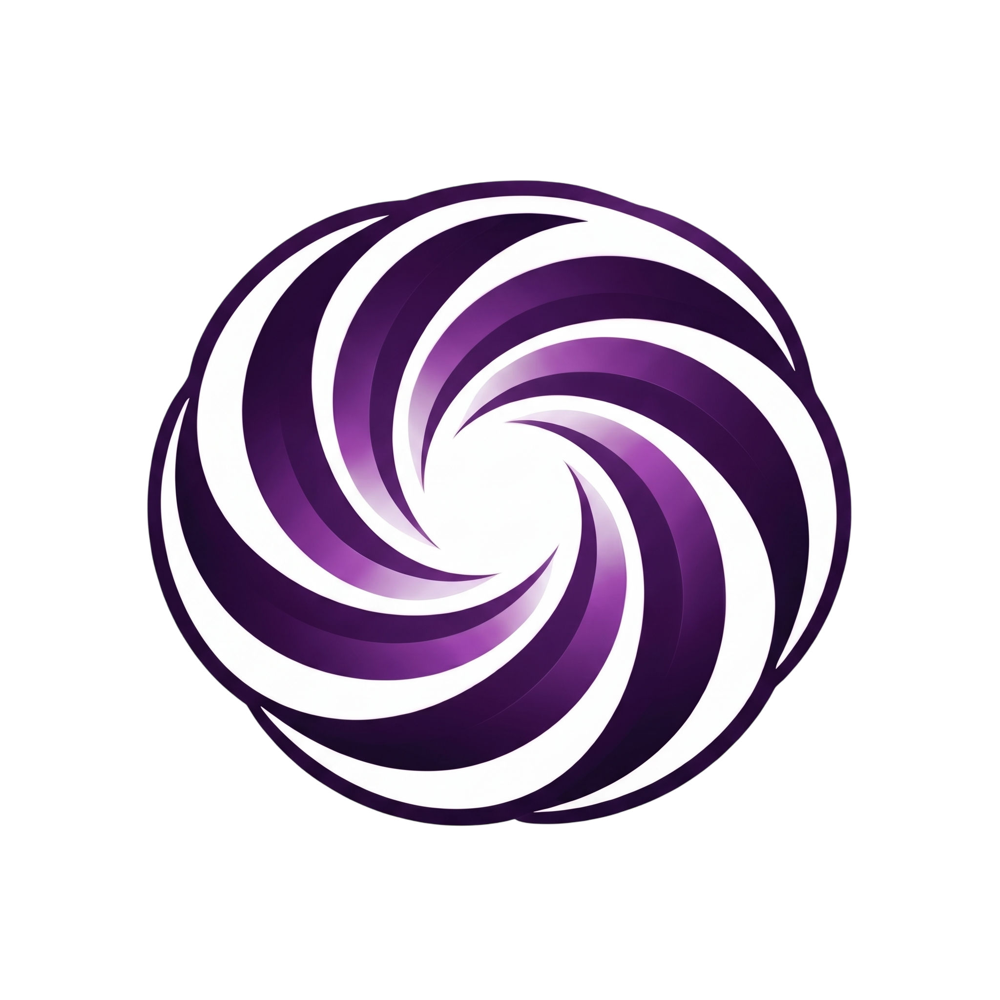
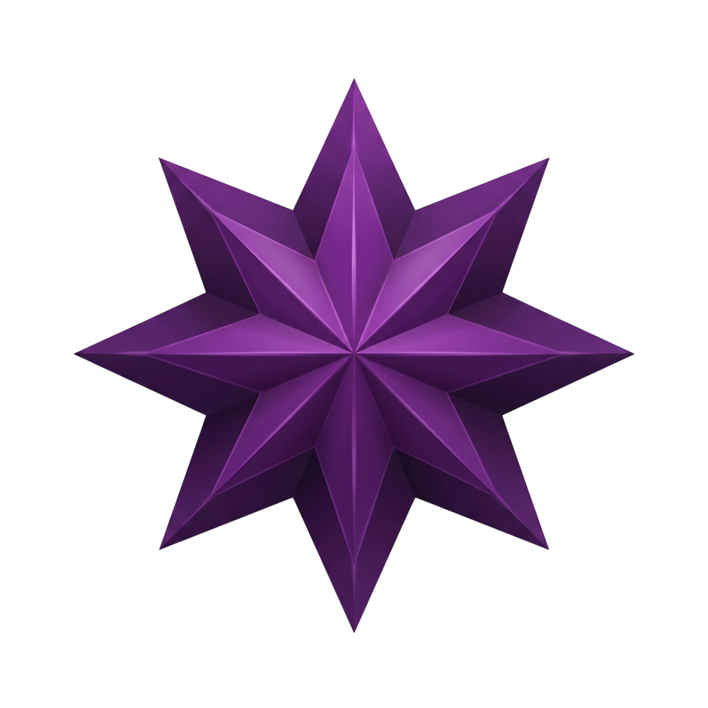

POROS KATALIST
"Bergerak dari Nilai Bertumbuh untuk Perubahan."
Makna Nama
Poros
Poros melambangkan pusat keseimbangan dan titik tumpu utama yang menyatukan berbagai arah, gagasan, dan potensi. Sebagaimana poros pada sebuah sistem, ia menjadi penopang agar setiap gerak tetap terarah, stabil, dan selaras menuju tujuan bersama.
Katalist
Katalist bermakna pemicu percepatan perubahan—unsur yang menggerakkan proses tanpa kehilangan jati dirinya. Dalam konteks kepemimpinan, katalist mencerminkan peran aktif dalam mendorong inovasi, kolaborasi, dan transformasi secara berkelanjutan.
Makna Keseluruhan & Esensi
Poros Katalist dimaknai sebagai pusat penggerak yang mampu menyatukan elemen-elemen organisasi sekaligus mempercepat lahirnya perubahan positif. Kabinet ini hadir sebagai fasilitator yang menguatkan setiap peran agar bergerak lebih cepat, efektif, dan berdampak melalui nilai kesatuan, dinamika progresif, kolaborasi sinergis, serta keberlanjutan jangka panjang. Secara esensi, kabinet ini terpusat dalam satu tujuan dan senantiasa bergerak aktif sebagai pemicu perubahan yang nyata.
"Mewujudkan BEM FAI yang unggul, adaptif, dan kolaboratif dalam membangun iklim organisasi yang sehat, serta kebermanfaatan untuk mahasiswa FAI secara berkelanjutan."
Langkah Nyata
Merealisasikan iklim organisasi yang harmonis, berkemajuan dan berkelanjutan.
Menciptakan organisasi yang adaptif, responsif dan komunikatif terhadap pola kinerja dinamika internal dan eksternal BEM.
Memberikan pendampingan, pemberdayaan, dan advokasi mahasiswa demi mewujudkan kesejahteraan mahasiswa FAI.
Menciptakan jaringan strategis dan sinergritas kolaboratif guna tercapainya BEM FAI yang unggul.
Mengoptimalkan program kerja BEM FAI agar lebih proporsional, tepat dan bermanfaat.
Simbol Poros Katalist

Pusat Spiral (Poros)
Melambangkan poros utama gerakan sebagai titik temu gagasan dan aspirasi. Mencerminkan proses dinamis, berkelanjutan, dan transformasi pemikiran yang progresif.

Rub el Hizb (Bintang Delapan)
Adaptasi tradisi Islam yang bermakna keseimbangan ilmu dan amal, serta kesempurnaan arah kehidupan (Hablumminallah & Hablumminannas).
Warna Ungu
Melambangkan kebijaksanaan, intelektualitas, dan wibawa. Gradasi ungu menunjukkan kematangan gerakan dalam setiap prosesnya.